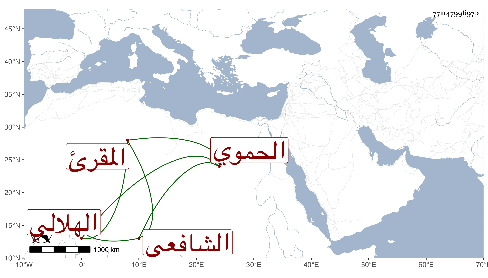

0902Sakhawi.DawLamic.ITO20230111-ara1.EIS1600.771147996970
Biography ID: 771147996970
605
علي بن أحمد بن علي بن محمود بن نجم بن هلال بن ظاعن بالمعجمة بن دغير بمهملة ثم معجمة وآخره راء العلاء الهلالي الحموي الشافعي المقرئ أخو عمر ومحمد الآتيين . ويعرف بابن الخدر بمعجمة مفتوحة ثم مهملتين الأولى مكسورة أخذ القراءات فيما ذكره لي ثاني أخوته عن جماعة وتميز فيها وفضل . مات في المحرم سنة أربع وأربعين ودفن بمرج الدحداح عن ثمان وثلاثين سنة قال وقد رأيته في المنام فسألته ما فعل الله بك فقال عاملني بحلمه وكرمه وغفر لي بحرف واحد من القرآن من رواية ابن عامر انتهى . قال : وكتبه عني التقي بن قاضي شهبة رحمه الله .
